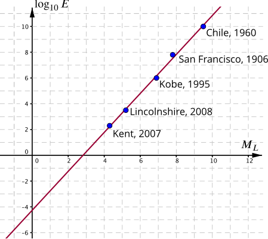

The magnitude scale is based on horizontal displacement,
ML=log10(AA0), where A0=1μm.
But the destructive power of an earthquake is better indicated by the amount of energy dissipated. It has been suggested that the energy, E, is related to the displacement, A, by a simple power law,
The given data shows how E changes with ML, so first we need to use the formulae above to find a relationship between these two. Using logarithms on the suggested power law, then combining with the definition of ML,
If we plot a graph of log10E against ML, this should give a straight line with gradient p and intercept log10E0.

Indeed the points do lie roughly on a straight line, so we can confirm the suggested relationship. Reading the gradient and intercept from the graph, we find
plog10E0E0=1.5=−4.2=10−4.2≈6.3×10−5GJ=63kJ.
This value of p agrees with Charles Richter’s empirical model that states E∝A32. A consequence of this is that an increase of 2 in magnitude corresponds to an increase of energy by a factor of 1000.
Estimate the energy dissipation of the 2011 New Zealand earthquake, magnitude 6.1.
This can either be read from the graph, or calculated using the formula which can now be rewritten as
E=E0×103ML2=63×103×6.12≈8.9×1010kJ=8.9×104GJ.
This is a little more than the energy released by the atomic bomb that was dropped on Hiroshima in 1945.